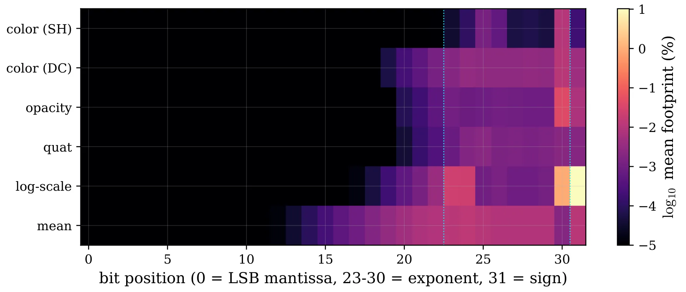
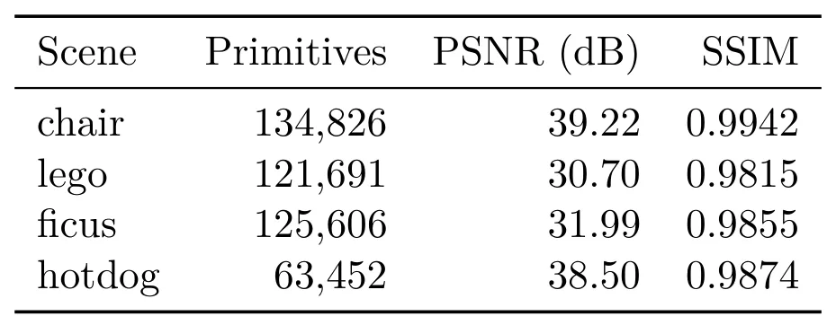

3DGS 渲染中的单粒子翻转：位级关键性、空间影响与并行支撑域保护Single-Event Upsets in 3D Gaussian Splatting Rendering: Bit-Level Criticality, Spatial Extent, and a Parallel Support Guard
不是新重建算法，但对机器人边缘部署、空间平台和安全关键 3DGS 渲染很有参考价值；可作为鲁棒表示/容错机制跟踪。
一句话工作总结
用大规模 bit-flip 实验定位 3DGS 的关键故障位，并用轻量支撑域 clamp 防止边缘/航天渲染出现灾难性污染。
摘要
面向航天处理器和机器人边缘设备中的瞬态故障，本文系统测量 3DGS 模型参数单 bit 翻转对渲染的影响。作者实现 GPU 驻留并行故障注入，在四个场景、六类字段、全 bit 位和 fp32/fp16/bf16 格式上执行 380 万次以上实验。结果显示大多数翻转几乎无感，但少数高阶位，尤其尺度参数的符号位，可让单个 primitive 覆盖大面积画面。作者给出 IEEE-754 与渲染管线激活的闭式扰动界，并提出按训练期间坐标盒进行 per-primitive clamp 的 support guard，以极低帧开销显著限制污染范围。
Three-dimensional Gaussian splatting is a standard real-time scene representation increasingly deployed on hardware exposed to transient faults, such as spaceborne processors and robotic edge devices where silent data corruption occurs. A trained model is a large array of floating-point parameters in GPU memory, where a single-event upset corresponds to a single flipped bit. This paper measures these effects and constructs a defense. A GPU-resident parallel fault-injection engine applies over 3.8 million controlled single-bit upsets across four scenes, six fields, all bit positions, and three numeric formats (fp32, fp16, bf16), using 5.3 GPU-hours. The effect is highly concentrated: most upsets leave the image perceptually unchanged due to high redundancy, but a small set of high-order bits principally the logarithmic scale's sign bit enlarge a single primitive to cover up to 75.7% of the frame. A closed-form perturbation bound derived from the IEEE-754 layout and pipeline activations predicts this per-bit ordering. This concentration motivates a support guard: a per-primitive clamp of each parameter to the coordinate box observed during training, costing 76 us per frame. Over 768,000 guarded upsets, the worst corruption footprint is restricted to 11.68% of the frame. We prove the guard leaves clean models unchanged and prevents frame-covering corruption. Under an accumulated dose of 20,000 simultaneous upsets, the unguarded renderer degrades to 10.6 dB, whereas the guarded renderer remains at 21.8 dB. The corruption footprint also dictates the number of tile/compositing nodes contaminated in distributed renderers, where the per-node guard contains it.
中文解读摘录
- 英文题名：Scene-Level Heterogeneous Physics Simulation with 3D Gaussian Splats
- 作者：Xiaoyang Liu, Shangzhe Wu, Kai Han
- 类别/来源：cs.GR, cs.AI, cs.CV；rss:cs.GR；采集 score=12；阅读优先级=9.2/10。
- 一句话总结：把 3DGS、网格和流体统一抽象为物理粒子，使捕获场景中的高斯资产能够参与真实交互和非刚体变形。
- 为什么值得看：与 3DGS 场景表示、交互式三维资产和机器人仿真高度相关；亮点在于从渲染表示跨到统一物理表示。需后续确认开源计划、运行成本和复杂真实场景鲁棒性。
- 标签：3DGS、物理仿真、场景级交互、非刚体变形
- 链接：abs / PDF
图表/页面预览
{kind=link}

{kind=link}
